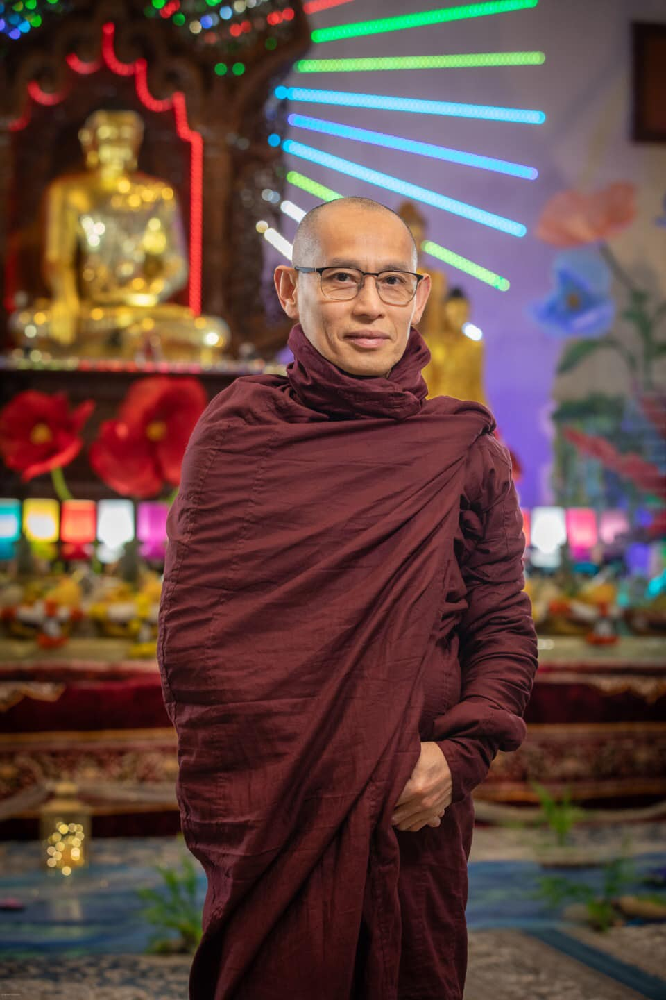

Venerable Ashin Pannobhasa
Venerable Ashin Pannobhasa was born in April 1966 Thursday (2nd Waning day of Kason 1328 Myanmar Era) in Pyapon, Irrawaddy Division. After finishing his Mechanical Engineering degree from Yangon (Rangoon) Institute of Technology he received higher ordination as a Bhikkhu or a monk at the age of 24 in the Ordination Hall, Pyapon Mahasi Sasana Yeiktha under the preceptor of Venerable U Vannita, Pyapon Mahasi Sayadaw, Pyapon Mahasi Sasana Yeiktha on 27th July 1991.
Ashin Pannobasa has had a trainee of insight meditation for nearly two years under the guidance of Ovadacariya Sayadaw, Venerable U Vannita, Pyapon Mahasi Sasana Yeiktha. Then he moved to Sasanamandaing Pali University and Vijjotarama (Weikzawtaryone) Monastery where he learned his higher education under the guidance of Venerable U Vijjota for 5 years and passed Pathamapyan Examinations (Junior, Intermediate and Advance courses) held by the religious Ministry of Government. And then he passed the Dhammacariya Examination, held by the Ministry of Religious Affairs, and awarded the title of Sasanadhaja Dhammacariya by the religious Ministry of Government when he finished the teacher Training course.
Ashin Pannobasa taught Pali Scriptures (Buddhist Literature) to his fellow monks, novices from 1998 to 2005 at Vijjotarama (Weikzawtaryone) Monastery, Myasabai Street, Mayangone Township, Yangon. From 2005 to 2013, he has been giving Dhamma Talks, teaching Abhidhamma and instructions in Insight Meditation to Burmese community and foreigners and then basic Buddhism to children at Tisarana Vihara, 357, Nelson Road, Whitton, TW2 7AG, London, UK.
Now he was invited by TBSO(USA) to perform religious ceremonies and activities in 17730, Broadway Ave, Snohomish, WA98296 USA where he currently staying as a principal monk. And then he also taught Abhidhamma (Ultimate teaching of the Buddha) in English and Burmese on every Friday and Saturday here.
Message from Ashin Pannobhasa
The Theravada Buddha Sasana Organization (USA) was founded in Sept 2009. It is a small Monastery located a few miles south of Snohomish WA on Broadway Ave. The lot is about 5 acres with a variety of small ecosystems. A brook flows gently through emptying into a small pond next to a wetland area. There is a meditative wooded area which will someday have small cabins for quiet meditation. The monastery building is rather small but functions well. A nice feature of a large lot is parking. Visitors will always find parking quite convenient. The membership has been steady, even growing slightly these last few years.
TBSO (USA), as its name suggest, is of the Theravada tradition. Theravada Buddhism is characterized principally by drawing upon the abhidhamma (higher teaching) for its definition and by its promotion of vipassana or insight meditation. The Theravada tradition is usually considered to be composed of three basic components, the abhidhamma, the teaching for monks and nuns and the teaching for lay people. The two teaching components are derived from the abhidhamma. By design the teachings for lay people is the least difficult to study which is what gives it great practical value. The abhidhamma is a detailed description of the inner workings of mind and consciousness, think of it as providing an exploded view of the mind. The complexity of the abhidhamma is beautiful; it is an imposing work and intellectually demanding when studied thoroughly. The main impetus of Vipassana meditation is not necessarily to achieve calm demeanor but, figuratively speaking, to open a window into what can be thought of as another world; a place from which you can know, e.g., that the sufferings, great and small, of the everyday mundane world can be made more tolerable with proper attentiveness.
TBSO (USA) is very fortunate with the recent arrival of Ven. Pannobhasa who will be the principal monk. Ven. Pannobhasa is a much achieved monk, especially in abhidhamma studies. He is originally from Myanmar, being ordained at a renowned monastery in Yangon. Ven. Pannobhasa resided for several years at well-established monastery in London prior to accepting the position of principal monk at TBSO. What will be of great benefit to TBSO is that Ven. Pannobhasa speaks fluent English. Ven. Pannobhasa also gets involved with the non-ministry functioning of the monastery. He provides a focal point and guidance for the laity, helping with monastery upkeep and maintenance.
TBSO had a slow start but now under the skillful direction and guidance of Ven. Pannobhasa and the efforts of TBSO members the monastery in time will evolve itself into a vibrant center of Theravada Buddhism. Not another monastery some may be lamenting. TBSO considers itself as complementary to other monasteries and not at all as some sort of competitor. Visitors from other monasteries are most welcome as is anyone who is interested in the Theravada Buddhist tradition.
TBSO offers a beginners class in abhidhamma studies and is setting up a class in abhidhamma for children. Also envisioned is an applied abhidhamma class, i.e. how to make vipassana of practical value in daily life. There are lots books, websites, organizations, etc. available in the public domain that can provide a similar practical value. Noteworthy is that many of those have at their core some sort of meditation. For example the Internet is replete with highly reputable research results demonstrating the benefits for both body and mind of insight mediation. Especially when done with a practical objective. One researcher has in fact adopted the four noble truths as taught by Theravada Buddhism to a program for helping people with mental disorders, in particular uncontrollable compulsions. Impressively the success rate of this meditative treatment has been greater than traditional therapy.
Another exciting part of the TBSO vision is to eventually build a much larger monastery. The new building would have a large mediation hall, classrooms, lecture room and even accommodations for those participating in multiple day retreats. This will be a large project but it is motivational. TBSO is confident that under Ven. Pannobhasa's leadership this vision will be realized.
TBSO is essentially just beginning; it is a young monastery with great growth potential. Donations, as always, are very much appreciated.
Best wishes in the Dhamma,
Ashin Pannobhasa
The Principal Monk - TBSO
"Though it is a deed of little worth, do not think it will not affect you. Dropping water will in time fill a water pot drop by drop; the one who is wise is filled with good, even if one accumulates it little by little."
Board of Directors
| Chair | Ashin Pannobasa |
| Vice Chair | Aung Win |
| Secretary | Htet Kyan |
| Treasurer | Ni Lar Thein-Chen |
| Co-Treasurer | Nway Nway |
| VP Construction | Khin Maung Maung |
| VP Fundraising | Jeffrey T Tan |
| VP External Affair/Advancement | Jonathan Min Chu |
| VP Communication | Hein Htet Win |
| VP Programs & Services | Naing Zaya |
| VP Operations & Logistics | Tun Thet Aung |